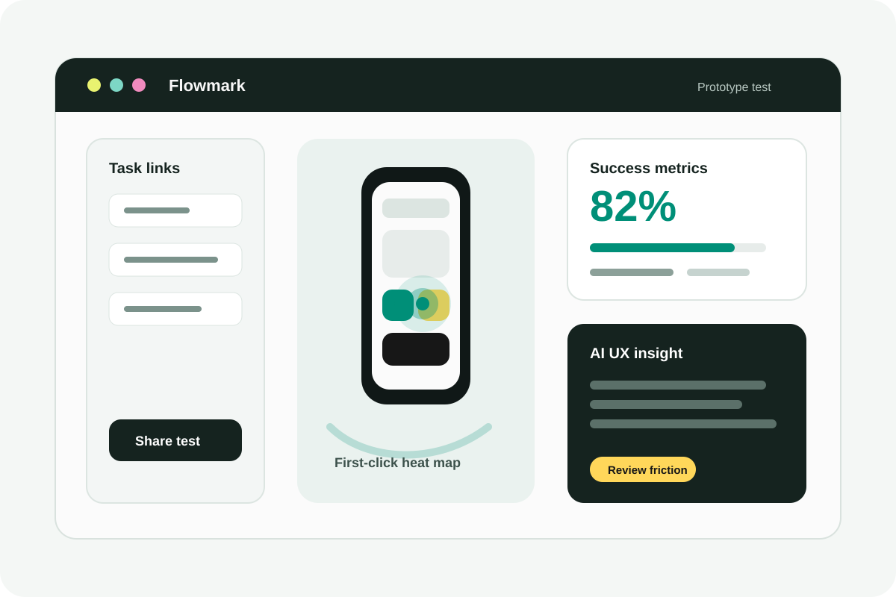

What I explored
How a team could validate mobile prototypes with task links, first-click data, heat maps, success metrics, and concise UX insight summaries.
Concept Case
A lightweight internal-use prototype testing platform for mobile flows, designed as a simpler alternative to paid third-party testing tools.
Early concept, not yet built

How a team could validate mobile prototypes with task links, first-click data, heat maps, success metrics, and concise UX insight summaries.
The strongest part is the narrow scope: make internal testing easier without trying to replace a full research platform.
The risky assumption is that teams need ownership more than polish. The MVP should prove whether lighter setup actually increases testing frequency.
Prototype testing tools are useful, but small teams often hesitate when setup, pricing, or third-party dependency feels too heavy for quick internal validation. Flowmark is framed around one practical question: what is the smallest useful testing loop for mobile prototypes?
The product should not try to become a research suite. Its job is to make one focused test easy to create, share, read, and repeat.
The first version should cover task links, first-click capture, click heat maps, success and drop-off metrics, and a short AI-assisted summary that helps the designer notice friction faster.
Anything beyond that, participant panels, advanced recruitment, complex segmentation, and polished reporting, should wait until the basic testing habit is proven.
The biggest UX risk is false confidence. A lightweight testing platform can make numbers look more authoritative than they are. The interface needs to show sample size, task context, and uncertainty clearly, especially when AI summarizes behavior.
I would prototype only the test creation flow and results view first, then run it against one real mobile prototype. If that does not save time or clarify decisions, the product should stay as a learning artifact rather than become a bigger build.